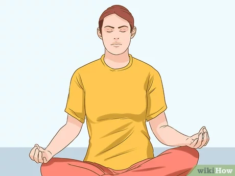

Uh-Oh, Something Went Wrong!
Looks like you've encountered a hiccup. Don't worry, we're here to help you get back on track!
Here are a few things you can try:
- Take a deep breath and count to 10. Sometimes, a little patience can work wonders.

- Grab a cup of coffee or your favorite snack. It's amazing how a little treat can lift your spirits.

- Dance to your favorite song! Sometimes, a quick dance break is all you need to shake off the frustration.
If none of the above suggestions help, don't hesitate to reach out to our support team. They're experts at turning frowns upside down!
Meanwhile, feel free to visit our homepage and explore more of what we have to offer.